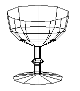
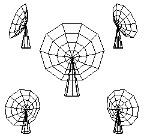

Labs for The Most Complex Machine
xModels Lab 2: Adding the Third Dimension
REAL OBJECTS EXIST in three dimensions, and realistic computer graphics must be able to deal with three-dimensional objects. In the previous lab, you used the xModels applet to create two-dimensional scenes and animations. However, the applet can also use three-dimensional objects and three-dimensional geometric transformations. In this lab, you will add the third dimension to your work with xModels.
Before starting this lab, you should make sure that you are familiar with using the xModels applet to write programs and to view scenes. You should understand the basics of the scene description language, including the use of the define command to create new objects. This material was covered in the previous lab and is not repeated here.
This lab includes the following sections:
Start by clicking this button to launch the xModels applet in its own window:
(For a full list of labs and applets, see the index page.)
In the Direction of Z
Geometric models can be constructed in three dimensions, as well as in two. Even for three-dimensional models, of course, the image still has to be displayed on a two-dimensional computer screen, but the model of the scene exists, at least in our imagination and the computer's memory, in three dimensions. Once you understand the basic ideas of geometric modeling in two dimensions, the step up to three dimensions is not so hard. Just remember that in addition to the x and y-coordinates that you are used to, there is also a z-coordinate.
Think of z as measuring distance in front of the computer screen (or, if z is negative, behind it). The x-axis is a horizontal line on the computer screen. The y-axis is a vertical line on the screen. The x- and y-axes intersect at a point called the origin, which is at the center of xModels' display area. The z-axis is a line perpendicular to the screen. Like the other two axes, the z-axis goes through the origin. The positive direction of the z-axis points at you out of the screen. Larger positive values are closer to you. Points behind the screen have negative z-values. Any point in three dimensions has three coordinates, giving its position with respect to the x, y, and z axes.
In the previous lab, you worked with two-dimensional objects that lay entirely in the xy-plane. In this lab, we add a z-coordinate, and you can work with objects that lie anywhere in xyz-space. The image that you see on the screen is obtained by projecting the three-dimensional objects onto the two dimensional computer screen. By default, objects appear as they would from the point (0,0,20), which is on the z-axis 20 units in front of the screen. (Any objects or parts of objects that are behind this point are not shown at all.) The number 20 is called the viewing distance. You can set a different viewing distance for a scene by using the viewDistance command in your scene description. For example, the command
viewDistance 50
sets the viewing distance to 50. This means that the objects are projected onto the xy-plane from the point (0,0,50). The viewDistance can only occur once in a scene description, and it will have the same effect no matter where it occurs.
(This description of viewing distance is somewhat misleading, since xModels will display the same region of the xy-plane, no matter what the viewing distance. You might expect to see a larger region of the xy-plane if you "back up," but this doesn't happen. Things will, however, look more squashed in the z-direction. Objects that actually lie in the xy-plane will look exactly the same no matter how the viewing distance is set.)
The xModels applet, which you launched above, is set up to load several sample programs. When it first starts up, it should be displaying a program called "Flaps." Click on the "RENDER!" button to see what this animation looks like. The object in the animation is made from eight rectangles, but the rectangles have been rotated out of the xy-plane so that the object as whole is three-dimensional. To understand the scene description, you'll have to read the next section of the lab. However, you might want to try adding a viewDistance command to the scene description. Try several different distance settings. In particular, you should try viewDistance 5, which places the viewing point inside the object. Try to understand what you see.
Three-Dimensional Objects and Transformations
The basic building blocs of three-dimensional models in the xModels applet still include line, circle, square and polygon, which start out as two-dimensional objects in the xy-plane but which can be translated or rotated out of that plane. (You saw an example of this in the "Flaps" program above.)
There are also a few three-dimensional basic objects in xModels: A cube is a one-by-one-by-one unit cube, centered at the point (0,0,0). A cone is a cone that just fits inside the unit cube, and a cylinder is a similarly-sized cylinder. These objects are pretty small, but they can of course be scaled. For example, if you want to see what a cone looks like, try a scene description that contains the command:
cone scale 10
There is also a polygon_3D command, which constructs a polygon from a list of three-dimensional points instead of two-dimensional points. Later in the lab, you'll see two other commands, lathe and extrude, which can produce interesting objects.
Just as in two-dimensions, the geometric transformations in three dimensions include scaling, translation, and rotation.
The scale command can be used with one, two, or three parameters. With one parameter, as in scale 5, it magnifies an object equally in all three directions. If three parameters are given, they specify different scaling factors in each direction. For example,
cube scale 5 0.5 2makes a rectangular solid that is 5 units long in the x-direction, 0.5 units high in the y-direction, and 2 units thick in the z-direction. If a scale has only two parameters, then the same scaling factor is used in the z-direction as in the y-direction. (This version is provided mostly for use in two dimensions, where any scaling in the z-direction has no effect in any case.)
The translate command can also be used with one, two, or three parameters. In its most general form, with all three parameters, it specifies motion in all three directions. With one parameter, it specifies movement in the x-direction only, and with two parameters, it specifies movement in the x-direction and y-direction only. There is a command ztranslate for moving an object in the z-direction only. For example, "square ztranslate 5" represents a square that has been moved 5 units forward out of the screen. (You already saw the analogous commands xtranslate and ytranslate in the previous lab.)
Scaling and translation are pretty much the same in three dimensions as in two, but rotation in three dimensions is another matter. In two dimensions, an object is rotated about a point. A three-dimensional object must be rotated about a line, like a top spinning about its axis. In xModels, there are three rotations commands, for rotation about the x-axis, the y-axis, and the z-axis, respectively. The commands are called xrotate, yrotate, and zrotate. (The zrotate command is actually the same as the plain old rotate.)
It is easiest to understand rotation in three dimensions by looking at examples. Enter the following simple scene description into a new program in xModels, and render it:
animate 60 square scale 10 yrotate 0:360You will see a square rotating about its vertical axis. Note that the edge of the square that is farther from you looks shorter, as it should. Try the same scene with the square changed to a cube. Try using xrotate and zrotate instead of yrotate.
Next, try the following example, which illustrates a translation in the z direction followed by a rotation:
animate 60 square scale 5 ztranslate 8 yrotate 0:360The ztranslate command moves the square 8 units forward towards you. The yrotate command then sends it circling away from you and back. Try using xtranslate instead of ztranslate. Try xrotate and zrotate in place of yrotate. Make sure that you understand what you are seeing.
Of course, a lot of the power of xModels comes from its ability to construct complex, hierarchical models using the define command. You can use define to define three dimensional objects, just as you used it in two dimensions. You'll work with some defined objects in the exercises at the end of the lab.
The example program "NestedSquares3D" uses several levels of object definitions to create what might be the ultimate "nested squares" example. Each square rotates on its own, but it also takes part in the rotation of all the squares in which it is nested. I find the result visually interesting, kind of like a mobile.
Lathing and Extrusion
Modeling real objects (like cars or faces) in 3D requires that they be approximated with large numbers of polygons, perhaps hundreds of polygons in one object. You won't want to do anything so complicated with xModels. But xModels does have two ways of producing certain types of complicated objects. The methods are called lathing and extrusion. These are standard operations in three-dimensional graphics. The idea is similar in each case: a specified figure is copied several times, and the vertices of the copies are connected with line segments. For lathing, the copies are obtained by rotating the original around the y-axis. For extrusion, the copies are obtained by translating the original in the z-direction. In xModels, the commands for performing lathing and extrusion are lathe and extrude.
The lathe command takes a sequence of points in the xy-plane and connects them with line segments. It then takes the resulting figure and makes several copies of it by rotating it around the y-axis. The first parameter of the lathe command indicates the number of copies. This is followed by a list of the x and y coordinates of the points in the xy-plane. This is easier to understand if you see an example. The command "lathe 12 3,3 7,-3" says that the line from the point (3,3) to the point (7,-3) is to be copied 12 times. The copies are evenly spread out around the y-axis. With 12 copies, they are spaced every 30 degrees. The endpoints of the 12 lines are then connected, giving an object that looks like a lampshade. To see it, type in the following scene description:
animate 60 lathe 12 3,3 7,-3 yrotate 0:360If you change the 12 to a 4, only 4 copies of the line will be made. The resulting object looks like a truncated pyramid. You could also try adding another point or two to the end of the lathe command.
The extrude command is similar to lathe. It also takes a sequence of points in the xy-plane, connects them with line segments, copies the resulting figure a specified number of times, and then joins the vertices of the copies with more line segments. However in this case, the copies are translated in the z direction rather than rotated around the y-axis. The copies are stacked up in front of and behind the screen. Each copy is separated from the next by a distance of one unit. The simple example "extrude 10 -1,0 1,0" will create a ladder-like object with 10 rungs. (It will lie along the z-axis, so if you want to see it, you should apply an xrotate 90 to it.)
The sample program "LatheAndExtrude" contains several examples of lathing and extrusion. You should read the scene description and render it.
Exercises
Exercise 1: Make an animation showing three cubes of different colors nested inside one another. One cube should rotate about the x-axis, one about the y-axis, and one about the z-axis.
Exercise 2: The "Flaps" example program shows an abstract sort of paddle wheel that rotates about the y-axis. Paddle wheels are supposed to rotate vertically. Modify the "Flaps" example so that the "wheel" is vertical and rotates about the x-axis. This is a small modification, if you do it right! You don't have to modify the definitions of the "flap" or the "paddles" object.
Exercise 3: Define an object that consists of a large cube, ten units on a side, with a circle on each of its six faces. Each circle should be a different color. You will have to work to get all the circles properly oriented and positioned. You'll need some commands along the lines of "circle scale 8 xrotate 90 ytranslate 5". Make an animation that shows the entire object rotating as a whole.
Exercise 4: Consider the following four animations. (The command "viewDistance infinity" indicates projection from a very large, effectively infinite distance. This is also called parallel projection.)
(1) animate 60 viewDistance 20 ; Note: This is the default value. cube scale 10 yrotate 0:360 (2) animate 60 viewDistance 100 cube scale 10 yrotate 0:360 (3) animate 60 viewDistance infinity cube scale 10 yrotate 0:360 (4) animate 60 viewDistance 5 cube scale 10 yrotate 0:360Explain what is happening in each animation, and why each animation looks the way it does. Explain the differences among them.
Exercise 5: Use lathing to create a "goblet" shape, like this one:

Exercise 6: The sample program "Wagon," which was also used in the previous lab, shows a simple two-dimensional wagon. Convert it into a three dimensional wagon. Use four wheels. Use a cube instead of a square as the starting point for the body of the wagon. Try out your wagon in an animation with the command
wagon xtranslate -10:10 yrotate 60 xrotate 15You should see a wagon that looks like it's driving away from you up a hill.
Exercise 7: The picture below shows a "radio telescope" from several different viewpoints. This telescope is made of two pieces. The base is a cone. You can use a cone object, or you can make it by lathing a single line segment. The dish of the telescope is not a cone, since it's cross section is curved. You can make the dish by lathing a curve consisting of several line segments connecting (0,0) to (4,2). The dish has to be rotated and translated into position after it is created. Define a telescope object as described. Then make an animation that shows three telescopes rotating back as forth (sweeping the skies for signs of new galaxies or extraterrestrial life).

Exercise 8: Use the xModels applet to make a three-dimensional image (not an animation) of your choice. Your scene description should include at least one object definition. You might, for example, try to make a house, a sailboat, a robot, or a space station.
Exercise 9: Use the xModels applet to make an animation of your choice. Try to be creative and/or aesthetic.
Exercise 10: Write an essay discussing the differences that you have observed between two-dimensional and three-dimensional graphics. Why is three-D graphics harder? What additional skills do you need in order to work in three dimensions? Is it worth the extra effort?
This is one of a series of labs written to be used with The Most Complex Machine: A Survey of Computers and Computing, an introductory computer science textbook by David Eck. For the most part, the labs are also useful on their own, and they can be freely used and distributed for private, non-commercial purposes. However, they should not be used as a formal part of a course unless The Most Complex Machine is also adopted for use in that course.--David Eck (eck@hws.edu), Summer 1997